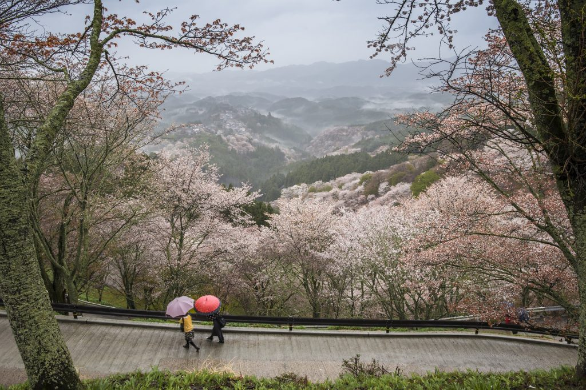

Japan is a modern country
Japan is a perfect mix culture, history and modern comfort. There are skyscrapers, modern restaurants and everything else you can come across in the modern world. But, Japan does have it’s own unique, modern style and can’t be compared with any other modern country.

Nature
Although Japan has big, heavily urbanised cities such as Tokyo, Kyoto and Osaka, there is also a lot of nature to explore. In fact, two thirds of Japan is actually covered by forested mountains and hills! But in Japan you also have waterfalls, volcanoes, mountains and more.
Food
Japan has more amazing food than only ramen or sushi! For instance, try the Okonomiyaki pancakes, made with cabbage and topped with a variety of options. This can be anything from meat to seafood! Other food to try in Japan are Soba noodles, Yakiniku barbecue, Tempura, Sukiyaki, Yakitori and much, much more…